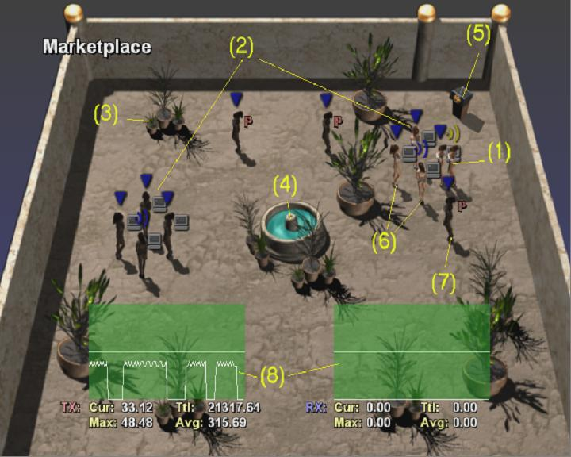
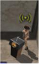
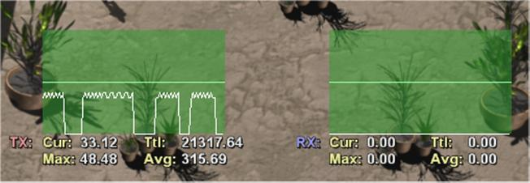
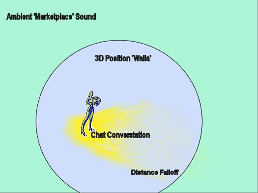
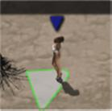
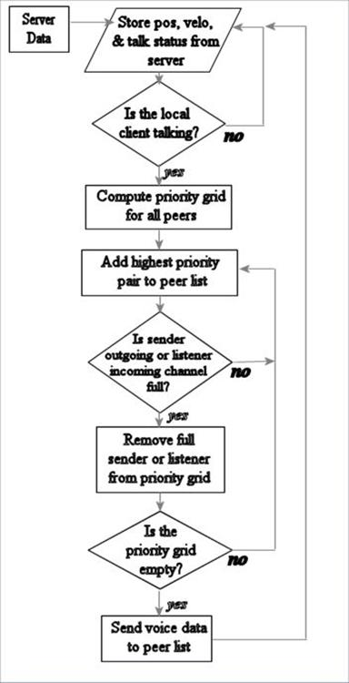

In online social play, players interact in different situations and have different communication needs. The most common need is for small-group chat and information exchange—like you might have in a head-to-head sports title, or with your friends on the Allies side playing Return to Castle Wolfenstein. Current shipping games and Xbox samples (SimpleVoice) cover this area pretty well. Best practices information is also available in the Xbox Live white papers.
Many situations also call for spatial chat—to taunt a fallen enemy without stopping as Moto GP illustrates, or to have people interact with each other in a larger lobby area. For example, Phantasy Star Online uses text-chat in their lobby to let players form groups or try to sell items. Massively multiplayer games in development are also considering ways to use voice to enhance the social experience.
The Marketplace sample can serve as both a design sample of how players can interact in spatial chat, and as a technical sample showing several methods of handling player communications, bandwidth issues, peer-to-peer voice, and server voice.
The different communications paths shown in the sample—private, proximity, and broadcast—and the mix of in-the-ear and TV-speaker delivery should give you the ability to determine the systems needed to best enhance your game experience.
In this document, the words "host" and "server" are used interchangeably; the Marketplace server also provides functionality as a client, so it is referred to as a "host" in much of the documentation. In a large multiplayer game, the server typically wouldn't provide local client functionality.
Marketplace requires a connection to the Xbox Live service. When you first run it, you will be asked to log in to Xbox Live on PartnerNet; select an account, and press A. You will be presented with four choices: to host with or without Talk-bots, to join an existing session, or to edit the Talk-bot voices (more detail on this later ). Marketplace is based on a client-server architecture, although for convenience you can still interact as a client even if you are hosting the session.
If you are running this by yourself, you will probably want to pick Host New Marketplace (Bots). It will allow you to sample most of the features without requiring more than one XDK.
Once you are in the application, you will be presented with a large Marketplace display:

| # | Note |
|---|---|
| (1) | This is your avatar. Your avatar will have a yellow icon above her head; all others will have blue icons. |
| (2) | These are Talk-bots; note the next to them. |
| (3) | Trees (no functionality). |
| (4) | Fountain (no functionality, has a 3D fountain sound). |
| (5) | Podium - if you are behind the podium, you will be broadcast to everyone in the Marketplace. |
| (6) | If someone would be able to hear you talking, they are highlighted. |
| (7) | If someone wouldn't be able to hear you, they are darker grey. |
| (8) | This is the statistics display (turned on with the white button). |
| Icon | Comments |
|---|---|
| The computer icon identifies Talk-bots. | |
| Player is not currently talking. | |
| Player or Talk-bot is talking. | |
| Player is talking to everyone on the podium. | |
| Player is on the private channel and can hear the private channel over her headset and talk on the private channel by pressing the A button. | |
| Player is talking on the private channel. |
| Button | Command | Comments |
|---|---|---|
|
Black |
Show Names | Hold this down to reveal the Gamertags of people in the Marketplace (Talk-bots won't have names, of course). |
X |
Join Private Channel | Joins the Private channel - a letter P is displayed next to people on the channel. |
A |
Push-To-Talk | If you've joined the party channel, hold down the A button as a push-to-talk. |
Y |
Host Menu | If you are the host, Y will pull up the host menu. |
|
White |
Toggle Stats | Turns the bandwidth display / network statistics chart on and off. |
| Left Stick | Moves your avatar around in the marketplace. Your avatar is the one with the yellow above it. | |
| Black + LTrigger + RTrigger | Quit | Exits the Marketplace sample. |
When you say anything on the headset microphone, it is public chat—and goes to all of the people that can currently hear you (highlighted). Walk around and engage in conversations with others, or listen to the random murmurings of the Talk-bots.
Once you join the Private channel (by pressing X), you can hear in your headset anyone who is speaking on that channel. To speak on the private channel once you have joined it, press and hold A while speaking into the microphone. To disable the private channel, just press X again. Players who are in the party channel have a next to their avatar. |
 |
The podium is a demonstration of broadcast using the server channel. A user who speaks at the podium can be heard by everyone in the Marketplace. |
Talk-bots can be enabled on the host to demonstrate chat when you don't have enough people to play in the simulation. You can customize the Talk-bots with your own speech and sound effects to more closely model the kind of experience you want to create. |

The Voice network statistics display is toggled with the White button.
Technical details on exactly what counts as voice network traffic is detailed in the statistics section below.
The host menu is displayed by pressing Y. Here you can change several settings that affect the technical details of how Marketplace works. Use the directional pad to select a setting, and press left and right to change it. Pressing A will accept (and B will cancel) all of the changes you have made and return you to the Marketplace. Host menu settings are detailed in the technical section below.

Vision: A user walking around the Marketplace should naturally form and break conversations based on proximity to speakers.
Marketplace implements a simple priority system for joining conversations that takes into account a number of factors that would be important for determining who in a player's proximity she is most interested in talking to. Adjusting these priority factors slightly can make the conversations make or break in the way you find is most natural for your game.
| Parameter | Priority |
|---|---|
| Proximity | Priority of 5 up to a defined minimum distance (in this case, 5 meters), falls off linearly further away. |
| Facing | Priority of 0.5 if directly facing the listener; falls off proportional to the cosine of the angle between speakers facing and listener direction. |
| Stationary | Priority of 1.0 if listener is not moving; helps conversation coherency with passers-by. |
If you were to implement this system for a shipping game, you'd probably want to add other prioritizing factors—for example, friends or party members could get a higher priority, even for normal social chat.
 |
Vision: Facing and distance should factor into voice position and volume. Voice is attenuated (gets quieter) over distance from the speaker. It also depends on whether the user is facing the speaker. Some simple panning is also done on the voice to try to position it appropriately to the avatar in the Marketplace sample. |
Note Because of the 2D isometric view used in the sample, the experience isn't quite as effective as it might be in a first-person or shoulder-view third-person title. So you might want to consider visual reinforcement for the speakers you were hearing. Attenuation was also turned up because of the limited space and character size this demo uses.
Vision: A social space should get noisier when there are more people talking, even if you cannot make out individual speakers.
There is an ambient chatter in the Marketplace, which is affected by the number of people present and the number of people who are currently talking. With just three people talking, the ambient sound is low; with more people, the ambient sound is louder.
Other 3D-positioned ambient sound sources (such as the central fountain) in the Marketplace demonstrate how these blend in to the overall scene.
Vision: Having a sense that there is conversation happening nearby makes a more interesting social space and lets users navigate into conversations.
Walla is the audio industry term for the unintelligible murmuring that any crowd (or an excited jury) makes.
Users who are not in the conversation can hear a 3D-positioned "walla" for individuals who are talking but not sending network voice due to bandwidth constraints. When the user gets in close enough proximity, he or she can join into the conversation and hear the voices of people speaking.
The sample for the base "walla" sound is pitch-shifted slightly to sound like different speakers. With several bots making the sound, it is easy to hear something that approximates crowd noise.
Note Even with your eyes closed, you can quickly navigate to where the conversation is taking place and have it resolve into audible speech.
Vision: Use the TV audio and 3D Sounds to make the space seem more immersive and social.
At the time of this writing, most games are using headset audio only, and the mandate to have voice through speakers for users who do not have the headset is a recent initiative for Xbox Live (see TCRs 3.0 on Xbox Central ).
Xbox Live games are primarily a social event. Unfortunately, while many are great fun for the person on the couch, they are not as much fun for others in the room who miss out on all of the interesting conversations, smack-talk, and chatter. Marketplace attempts to provide a more immersive feeling. Communication you would want to hear mixed in with the ambient sound is sent to through your sound system, while personal conversation is sent directly through your headset.
Users who have used Marketplace find the mix of ambient conversation and "private channel" conversation natural and easy to concentrate on one or the other. Perhaps it is years of telephone and cell phone training that lets players casually monitor what is happening in the room while concentrating on an "in ear" conversation.
Vision: A user should be able to experience, test, and experiment with Marketplace without having to have a full complement of human users.
The Talk-bots fulfill a dual role in Marketplace. Their primary purpose is to send data and voice conversation continually so you can adjust and experiment with the matching rules, and walk around to experience audio that your game could have in a lobby or other common area.
The other role of the Talk-bots is to think about how they would work as NPC characters—interacting verbally in the same space as players. A weaponsmith might call out about weapons for sale, and someone could approach and see a menu of what was being offered. Through some simple demonstrations you can imagine what a crowded spaceport or a medieval village could look and sound like for a player, and model the experience as a dynamic social space.
The bots are easily configurable to record in a variety of environmental sounds, voices, or chatter to customize the experience. The Edit Bot Voices command off the main menu lets you record your own Talk-bot voices.
Note In a game, content for bots could easily be streamed from storage. Higher-quality, local 3D-positioned audio could be used instead of the voice format that is used in the Marketplace sample—this was done so the bots could fulfill their primary mission as voice chatter source.
Access the Host Settings menu by pressing the Y button on the host.
There is currently no way to see the host settings on the client.
| Setting | Comments |
|---|---|
| Voice Mode | Peer-to-peer or server-forward |
| Network Rate | How often network update packets are sent |
| Voice Rate | How often voice update packets are sent |
| Speech Timeout | How much time must elapse before a client is identified as not talking. |
| Downstream Peers | Maximum number of streams that can be heard by any client |
| Upstream Peers | Maximum number of clients any client can send to peer-to-peer |
Setting the voice mode to peer-to-peer or server-forward affects the general architecture of the voice system. Peer-to-peer is recommended because generally clients have bandwidth to spare, while managing bandwidth on the host or server is common problem in multiplayer games. Server-forward is provided to allow bandwidth comparisons.
Network and voice rate also directly affect bandwidth. Lower values will require more bandwidth but will allow for greater fidelity. For Marketplace, the network rate defaults to 50 ms (1/20th of a second), as does the voice rate.
The speech timeout is used to adjust how long someone has to pause in a conversation to be considered "not talking." Changing this affects how peer-to-peer paths get allocated. The default is 1 second. We encourage you to try different settings. Let us know what seems natural for your game.
Downstream/Upstream peers are set for all clients at once in this sample, but could be based on the QoS APIs to allow clients on better connections to have a higher number of simultaneous connections. The default for both of these is 4.
Vision: Each client has bandwidth for only a limited number of voice streams. Allocating these wisely is important—voice allocation should be distributed and scalable.
Each client runs a simulation based on the most recent information from the server regarding who is talking and who is not. The server can send this bit on regular updates, since the method demonstrated by the Marketplace sample does not require complete up-to-date information (clients always have enough information to create a good approximation of ideal routes, even if it is a little old).
The basic flow for knowing who to send peer-to-peer voice traffic to is as follows:

Peer-to-peer voice update:
Repeat steps 3 and 4 until there are no more senders in the grid.
Notes:
Vision: Sometimes it is desirable to send voice from one client to many others—when giving speeches, for instance, or talking to other people in a party.
Both the podium and the private channel use server-forwarding; the voice data first goes to the host, who then passes it on to other clients by appending the voice data to the update packets. While it is costly in terms of CPU usage and bandwidth to do this all of the time, it is very useful to provide server-forwarding functionality in specific cases (for example, when one person wants to address a large number of other people).
Vision: It is important to know how much bandwidth would be utilized by voice, and be able to compare the costs of different approaches and settings.
On a client, the voice network statistics display always show how much bandwidth is being used for voice on transmit and receive. Packet overhead is counted, for peer-to-peer voice, but not for server-forwarded voice as voice data is appended to the update packets.
On the host, the voice network statistics display does not include the local client. A massively multiplayer server would not have a local display client, so it is more useful to see how much server bandwidth would be used.
To estimate the necessary voice bandwidth, simply fill in the green squares in this spreadsheet.
This section contains additional ideas and concepts that might be interesting to explore in your game or related areas Marketplace might be expanded to in the future. They are not demonstrated in the sample.
Currently possible, but not shown by this sample is the ability on Xbox to apply specific special effects such as echo. Adding in special effects, noise (such as a static crackle, distortion, or drift), and special filters might be appropriate for some games. Characters communicating over radio would sound like radio, or characters using a real podium might have a microphone tap when they first step up or might hear the occasional feedback squeak, and so on.
In a crowded room, you will often notice the occasional voice rising above the "white noise" or "walla" of a crowded space. Marketplace does not show this directly, but it could be done by selecting random speech for the server channel (if it wasn't being used for another purpose) and broadcast it to a larger area. XHV also did not expose "volume" of speech. It might be worth experimentally selecting out speech that suddenly rises (panic shouts, laughter, etc.) for wider distribution so normal conversation would be represented as ambience, but someone shouting "Help Me" would get broadcast to a fairly wide area.
It would have been interesting to experiment with an extremely low-quality voice compression—to give the impression of speech in a space but not have it be particularly intelligible until you are actually engaged in conversation. You could have a fixed amount of bandwidth to devote to conversation streams, or forward a very compressed "summary" through the server. In this sample, the generic "walla" was located in 3D and volume-attenuated to get a hopefully similar result.
Xbox does not currently feature a configurable codec. There may be potential at some point to do this through third-party software.
Voice masks were not used in this demonstration. See the LowLevelVoice sample for a demonstration of voice masking.
A variety of game-specific voice masks can be used and created.
Creating a Custom Voice Chat Engine, by John Harding.
Xbox Live Networking Best Practices, by Pete Isensee.
Xbox Network Performance, by Pete Isensee.